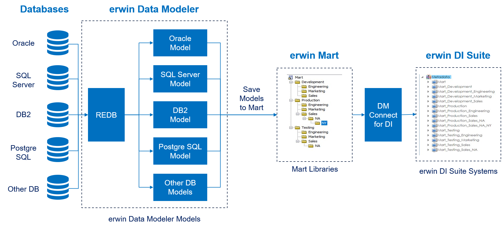

erwin now offers an integration, DM Connect for DI, between two powerful products, erwin Data Modeler (DM) and erwin Data Intelligence Suite (DI Suite). This offering enables you to maintain a single metadata and glossary source across erwin DM and erwin DI Suite using erwin Mart Administrator as an interface. Apart from this, DM Connect for DI offers the following benefits
erwin DM supports several target databases. It provides a powerful and robust workspace to create rich data models based on these target databases. Further, it provides connectivity to erwin Mart Server (MS); where you can store your rich data models in a mart repository.
erwin Mart Administrator (MA) provides you with a way to interact with erwin MS. It also acts an interface between erwin DM and erwin DI Suite. It enables you to schedule jobs to export data models and data sources from your mart repository to erwin DI Suite’s Data Catalog. Further, it integrates the naming standards set up on your models into the Business Glossary Manager.
erwin DI Suite enables you to use your data models as a foundation for your data governance initiatives. It enables you to maintain a semantic lineage between metadata and business objects.
To summarize, erwin Data Modeler, erwin Mart Administrator, and erwin DI Suite work together as follows.
